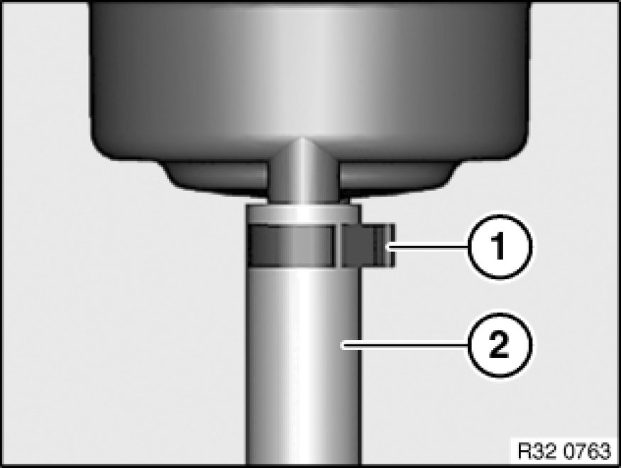
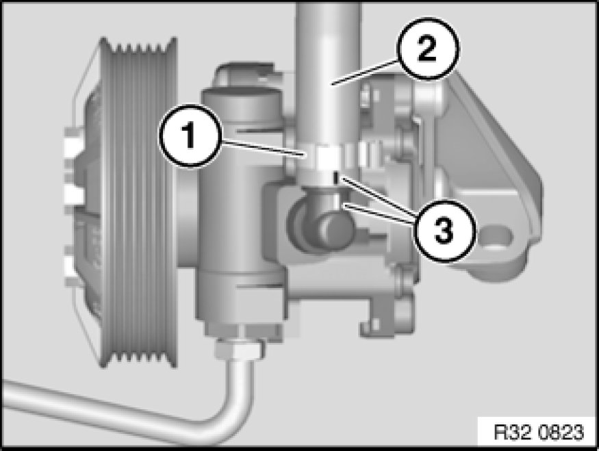

Replacing Suction Line for Power Steering (N52)
32 41 311 - Replacing suction line for power steering (N52)

Important!
Adhere to the utmost cleanliness. Do not allow any dirt to enter the hydraulic system.
Seal off hydraulic lines with plugs.

Necessary preliminary tasks:
- Draw off and dispose of hydraulic fluid from fluid reservoir
- Remove front underbody protection Removing and Installing/Replacing Front Underbody Protection
- Remove intake filter housing Service and Repair

Remove fluid reservoir from mounting bracket/body.
Release hose clamp (1) and detach suction line (2) from fluid reservoir.
Installation Note:
Make sure hydraulic line is laid without tension and with sufficient spacing to adjoining components.

Expose suction line up to connection on vane pump.

Release hose clamp (1) and detach suction line (2) from vane pump.
Installation Note:
Markings (3) on suction line and vane pump must match up.
If a marking is missing, it is important to ensure when installing the hydraulic line that it is laid without tension and with sufficient spacing to adjoining components.
After installation:
- Fill and bleed hydraulic system Service and Repair
- Check pipe connections for leaks